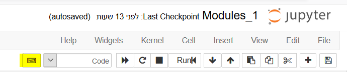

ההעלאה עצמה:
-
ראשית ודאו שהשורה הראשונה בתא היא
# Upload XXכאשר XX מוחלף במספר שנמצא במערכת הגשת התרגילים ליד שם התרגיל. חייב להיות רווח בין ה-# למילה ובין המילה למספר. המערכת גמישה מספיק כדי לקבל u במקום U. זו חייבת להיות השורה הראשונה - לפני הערות, לפני import ולפני כל דבר אחר. -
אם אתם מנסים להעלות פעם נוספת תרגיל אך לא מצליחים לדרוס את הקודם - אל תשנו דבר בתא מלבד להוסיף בשורה האחרונה בתא
# Reupload XXכאשר XX מוחלף גם פה במספר התרגיל. אל תשנו את השורה הראשונה שכוללת את ה-Upload, היא צריכה להישאר כפי שהיא. לאחר מכן שמרו את המחברת והעלו את התרגיל שוב למערכת. -
לפעמים, בעיקר כשמריצים דברים עם המון הדפסות, המחברת נהיית מאוד כבדה. במקרה כזה לחצו על המקלדת פה  ולחצו על
clear all cells output. כמובן לא לשכוח לשמור אחרי. אם זה עדיין לא עובד - נסו להעתיק את התא הרלוונטי למחברת חדשה ולהעלות אותה. -
אם כבר הגשתם את הכול ואתם רוצים לתקן משהו, זה הקישור דרכו ניתן להגיש מחדש https://solve.pythonic.guru/send.
- פירוט מלא לשימוש באתר נמצא פה: מדריך לשימוש באתר לבדיקת תרגילים
הערות הבודק האוטומטי על איך הקוד נראה:
שימו לב שמשבוע 5 חובה לתקן את כל ההערות, אחרת התרגיל לא ייבדק.
יש כמובן הרבה הערות אפשריות, אבל הנפוצות מביניהן עד כה:
- הערות ריווח למיניהן:
חשוב לשים לב שיש רווח אחרי פסיקים ושיש רווח אחרי נקודתיים במילון (ההערה עצמה יכולה להיות על אחד מהם ולהתכוון לשני) - ושאין רווח לפני הפסיק או לפני הנקודתיים.
נהוג להפריד פונקציה בשתי שורות ריקות לפניה ואחריה. כמו כן, אם יש לכם תווים לבנים בשורה ריקה או בשורה כלשהי אחרי התו האחרון בה - אתם תקבלו הערה גם על זה.
אם כותבים הערות שמתחילות ב-# - צריך שיהיה רווח בודד אחריה, ואם זו ההערה שאינה מתחילה בתחילת השורה צריך להיות רווח כפול בין התו האחרון בשורה לבינה.
גם לפני ואחרי אופרטורים כדוגמת +, -, =, == וכו’ יש לשים רווח. יוצא הדופן הוא כשמדובר בפרמטר דיפולטי ואז אין לשים רווח לפני ואחרי ה-=.
למי שמעוניין להרחיב את ידיעותיו בתחום של איך לעצב קוד נכון, יש מסמך שלם בנושא ממש כאן https://www.python.org/dev/peps/pep-0008/. - המשתנה לא הוגדר לפני השימוש - ייתכן שהגדרתם משתנה או ייבאתם מודול בתא אחר במחברת ולכן התא רץ לכם כמו שצריך - אבל כשאתם מעלים תא בודד הוא לא יכול לרוץ כי המשתנה/המודול אינם מוכרים בו. המחברת זוכרת שהגדרתם למעלה, הבודק לא. אפשר לבדוק בכמה דרכים לפני ההגשה - להעתיק למחברת חדשה ולבדוק אם זה עובד, או פשוט לעשות restart kernel ולהריץ את התא הזה בלבד.
- הגדרתם משתנה אך לא השתמשתם בו בלולאה. בלולאת for אנו רוצים לעיתים לרוץ x פעמים ומשתמשים לשם כך ב-for i in range(x), שזה טוב ויפה. אבל לפעמים אנו לא משתמשים בכלל ב-i, וזה נחשב לא מנומס להשאיר אותו מבלי שימוש. אם זה המקרה - החליפו את i בקו תחתון (_), זו הדרך שלכם לסמן שאין טעם לתת למשתנה הזה שם.
- האם אפשר לבדוק שערך שווה ל-True/False בצורה קצרה יותר - מוסבר במחברת של תנאים (מחברת 2.1).
- אם אתם מעוניינים להשוות משהו ל-None, אל תעשו זאת עם == אלא עם is, למרות ש(עוד?) לא למדנו מה זה בדיוק אומר.
- כל השורות של ה-import אמורות להופיע לפני כל השורות של ה-from … import. כל אחד מהנ"ל אמור להיות מסודר לפי סדר הא"ב. כל זה מופרד לשני בלוקים שונים - הראשון של ספריות מובנות בפייתון והשני של ספריות חיצוניות.
הבדיקה האוטומטית על איך הקוד עובד:
- אם יש AssertionError ואחריה x == y זה אומר שניסו להשוות את הערך שהפונקציה שלכם מחזירה, לרוב מדובר במה שמצד שמאל של האופרטור ==, כלומר x, עם מה שהיה אמור לצאת וההשוואה החזירה False. בדקו את עצמכם - האם הערך המוחזר הוא הערך הנכון? האם הדפסתם במקום להחזיר? האם פספסתם מקרה קצה? שימו לב שכתוב לכם גם מה אמור לחזור - אחלה דרך לבדוק מה השתבש.
- אם כתוב missing 1 required positional argument - הפונקציה שלכם מצפה לקבל ארגומנט אחד יותר ממה שהיא מקבלת בפועל (כלומר ממה שהבודק מצפה שהיא תקבל ומנסה לשלוח לה). בדקו האם קיבלתם את הארגומנטים שהתבקשתם או שהוספתם עוד רק למען הנוחות שלכם, וחשבו על איך לשנות את זה - למשל לעטוף בפונקציה חיצונית שמקבלת את מספר הארגומנטים שצריך.
- באופן כללי אבל גם מופיע לפעמים בהערות של הבודק: “None type not callable” או “None type not iterable” מעידים על זה שיש לכם None במקום שלא ציפיתם לו. נסו לחקור מי ה-None הסורר ולאן הוא חמק מבלי שהבחנתם לב


 )
){kind=link}
{kind=link}